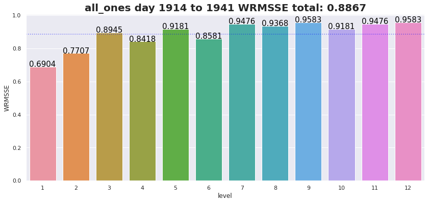

# For fast testing for Continuous Integration
PATH_DATA = 'small_data'
PATH_DATA_RAW = 'small_data/raw'
os.listdir(PATH_DATA_RAW)['sample_submission.csv',
'sell_prices.csv',
'calendar.csv',
'sales_train_evaluation.csv']# For fast testing for Continuous Integration
PATH_DATA = 'small_data'
PATH_DATA_RAW = 'small_data/raw'
os.listdir(PATH_DATA_RAW)['sample_submission.csv',
'sell_prices.csv',
'calendar.csv',
'sales_train_evaluation.csv']chunks = pd.read_csv(os.path.join(PATH_DATA_RAW, 'sales_train_evaluation.csv'), chunksize=1000)
df_stv = pd.concat(list(chunks)) # Safe for low RAM situation
df_cal = pd.read_csv(os.path.join(PATH_DATA_RAW, 'calendar.csv'))
df_prices = pd.read_csv(os.path.join(PATH_DATA_RAW, 'sell_prices.csv'))
df_ss = pd.read_csv(os.path.join(PATH_DATA_RAW, 'sample_submission.csv'))We need to implement the competition metric so that we can validate our prediction methods over different time periods. This notebook documents the intution and code needed to build the WRMSSE object. You may want to jump to it and see how to use it, but here are the main purposes of the object:
\[ \mathrm{RMSSE} = \sqrt{ \frac{1}{h} \frac{\sum_{t = n + 1}^{n + h}(Y_t - \hat{Y}_t)^2}{\frac{1}{n - 1}\sum_{t = 2}^{n}(Y_t - Y_{t - 1})^2} }. \]
\(Y_t\) is the actual value at \(t\), \(\hat{Y}_t\) the forecasted value, \(n\) the number of time series values, and, \(h\) the forecasting horizon.
Things to notice * The bottom of the numerator sums over all training days through \(n\), the last day before the forecast horizon. Its purpose is to normalize the errors of the series by scaling them by the average day-to-day difference in sales. This means that the RMSSE scores of any two series can be compared fairly, since both are scaled by their own volatility. * The top of the numerator sums over the 28 days of the forecast horizon, starting on day \(n\) + 1 * A prediction model that predicted the previous days sales should get a score of around 1.
The metric in this competition sort of compares the models performance to a naive model that always predicts that the next day will be the same as the current day:
\[ \mathrm{WRMSSE} = \sum_{i=1}^{42,840} W_i \times \mathrm{RMSSE_i} \]
\[ W_i = \frac{\sum_{j = n - 28}^{n - 1} volume\_series_i} {\sum_{j = n - 28}^{n - 1} volume\_all\_series\_in\_level} \]
The weight of each series will be computed based on the last 28 observations of the training sample of the dataset, i.e., the cumulative actual dollar sales that each series displayed in that particular period (sum of units sold multiplied by their respective price). Each of the 12 levels of aggregation is comprised of series whose weights add up to 1, and every product appears once in each level.
To simplify notation, I like to write the WRMSSE like this:
\[ WRMSSE = \sum_{i=1}^{42,840} \left(W_i \times \sqrt{\frac{\frac{1}{28}\sum_{j=1}^{28}{(D_j)^2}}{S_i}}\right) \] * \(W_i\): the weight of the ith series * \(S_i\): the scaling factor of the ith series * \(D_j\): The difference between sales and predicted sales for the ith series on day j
which further simplifies to this: \[ WRMSSE = \sum_{i=1}^{42,840} \frac{W_i}{\sqrt{S_i}} \times \sqrt{\frac{1}{28}\sum_{j=1}^{28}{(D_j)^2}} \]
To build a WRMSSE scoring object, we will need to create tools that can apply this caclulation as efficiently as possible. We will develop a sparse aggregation matrix, created with a one-hot-encoding style, that serves to compute the aggregations for all 42840 series from the bottme level 30490 series. After the aggregation matrix, we will develop methods to compute the weights W and the scaling factor S for all series. We will then combine our tools to create a WRMSSE object, capable of scoring predictions for any 28 validation period of known data.
We know we can compute all the aggregated series by using matrix multiplication with the correctly designed aggregation matrix. Our daily sales have the shape (number_items, prediction_horizon). Our agg matrix will need to have the shape (number_series, number_items) so that we can execute the matrix multiplication agg x sales.
We need a list of the aggregating features that will align with our weights and scales so that our matrices will match up. Level 1 does not need a column to group by.
For each sereis of each level of the WRMSSE, we will use pandas get_dummies function on the corresponding column or columns.
get_agg (df_stv)
Gets a sparse aggregaion matrix and index to align weights and scales.
agg_matrix_csr, agg_index = get_agg(df_stv)
display(agg_index[:5])
print('Number of series per each level')
agg_index.get_level_values(0).value_counts(sort=False)MultiIndex([(1, 'Total'),
(2, 'CA'),
(2, 'TX'),
(2, 'WI'),
(3, 'CA_1')],
names=['level', 'id'])Number of series per each level1 1
2 3
3 10
4 3
5 7
6 9
7 21
8 30
9 70
10 7
11 21
12 70
Name: level, dtype: int64get_df_weights (df_stv, df_cal, df_prices, agg_index, agg_matrix_csr, start_test=1914)
Returns the weight, scale, and scaled weight of all series, in a dataframe aligned with the agg_index, created in get_agg()
We need to convert the sales data into dollar sales data so that we can correctly weight each series. To begin, we consider only the last 28 days of data before START_TEST. We then put the data into “long” format so we can merge the calendar and price information.
Now we will get the total dollar sales for each item/store combination. Be sure to set sort=False so that our index stays in the proper order. We don’t need df anymore
We want to build a weight, scales, and scaled weight columns that are aligned with agg_index. We will divide dollar_sales by the total dollar sales to get the weight W for each series. We don’t need dollar_sales anymore.
We also need to calculate each series scaling factor S, which is the denominator in the WRMSSE cacluation. It can be pulled out of the square root and combined with the series weight to make a single weight W/sqrt(S), simplifying our calculations a bit.
S is the average squared difference of day to daily sales for a series, excluding leading zeros, for all training days leading up to START_TEST.
Aggregate all series, and replace leading zeros with np.nan so that we can do numpy calculations that will ignore the np.nan.
Now we can finish our weights and scales dataframe by adding scale and scaled_weight columns.
df_weights = get_df_weights(df_stv, df_cal, df_prices, agg_index, agg_matrix_csr, start_test=1914)
display(df_weights)
print("All weights add to 1 for each level")
df_weights.groupby(level=0)['weight'].sum().to_frame()/tmp/ipykernel_4101/3272591645.py:70: RuntimeWarning: Mean of empty slice
scale = np.nanmean(np.diff(agg_series, axis=1) ** 2, axis=1)| weight | scale | scaled_weight | ||
|---|---|---|---|---|
| level | id | |||
| 1 | Total | 1.000000 | 0.068950 | 0.068950 |
| 2 | CA | 0.530249 | 0.099428 | 0.052722 |
| TX | 0.186410 | 0.213903 | 0.039874 | |
| WI | 0.283341 | 0.126487 | 0.035839 | |
| 3 | CA_1 | 0.119939 | 0.304138 | 0.036478 |
| ... | ... | ... | ... | ... |
| 12 | HOUSEHOLD_2_001_TX_2 | 0.006322 | 0.921271 | 0.005825 |
| HOUSEHOLD_2_001_TX_3 | 0.007903 | 1.450575 | 0.011464 | |
| HOUSEHOLD_2_001_WI_1 | 0.011064 | 1.792239 | 0.019829 | |
| HOUSEHOLD_2_001_WI_2 | 0.009483 | 2.225395 | 0.021104 | |
| HOUSEHOLD_2_001_WI_3 | 0.007903 | 2.257263 | 0.017839 |
252 rows × 3 columns
All weights add to 1 for each level| weight | |
|---|---|
| level | |
| 1 | 1.0 |
| 2 | 1.0 |
| 3 | 1.0 |
| 4 | 1.0 |
| 5 | 1.0 |
| 6 | 1.0 |
| 7 | 1.0 |
| 8 | 1.0 |
| 9 | 1.0 |
| 10 | 1.0 |
| 11 | 1.0 |
| 12 | 1.0 |
Lets code a simple example using the last month as predicted sales
actuals = df_stv.iloc[:, -28:].values
preds = df_stv.iloc[:, -28 * 2: -28].values
base_errors = actuals - preds
errors = agg_matrix_csr * base_errors
rmse = np.sqrt(np.mean((errors)**2, axis=1))
wrmsse_by_series = rmse * df_weights.scaled_weight
df_scores = pd.DataFrame(wrmsse_by_series).rename(
mapper={'scaled_weight': 'WRMSSE'}, axis=1)
wrmsse = np.sum(wrmsse_by_series) / 12
print(wrmsse)
print('Scores for all series')
display(df_scores)0.8866951218462568
Scores for all series| WRMSSE | ||
|---|---|---|
| level | id | |
| 1 | Total | 0.690365 |
| 2 | CA | 0.382785 |
| TX | 0.180849 | |
| WI | 0.207100 | |
| 3 | CA_1 | 0.124278 |
| ... | ... | ... |
| 12 | HOUSEHOLD_2_001_TX_2 | 0.003651 |
| HOUSEHOLD_2_001_TX_3 | 0.007505 | |
| HOUSEHOLD_2_001_WI_1 | 0.012429 | |
| HOUSEHOLD_2_001_WI_2 | 0.011965 | |
| HOUSEHOLD_2_001_WI_3 | 0.012155 |
252 rows × 1 columns
Instead of saving the scores for each series, I will only save scores for each level, and the total score.
model_name = 'last_month_sales'
start_test = 1914
# level_scores
level_scores = df_scores.groupby(level=0).sum()
level_scores.loc[13] = level_scores.mean()
level_scores['model_name'] = model_name
level_scores['start_test'] = start_test
level_scores.reset_index(inplace=True)
level_scores| level | WRMSSE | model_name | start_test | |
|---|---|---|---|---|
| 0 | 1 | 0.690365 | last_month_sales | 1914 |
| 1 | 2 | 0.770734 | last_month_sales | 1914 |
| 2 | 3 | 0.894521 | last_month_sales | 1914 |
| 3 | 4 | 0.841782 | last_month_sales | 1914 |
| 4 | 5 | 0.918068 | last_month_sales | 1914 |
| 5 | 6 | 0.858148 | last_month_sales | 1914 |
| 6 | 7 | 0.947597 | last_month_sales | 1914 |
| 7 | 8 | 0.936827 | last_month_sales | 1914 |
| 8 | 9 | 0.958316 | last_month_sales | 1914 |
| 9 | 10 | 0.918068 | last_month_sales | 1914 |
| 10 | 11 | 0.947597 | last_month_sales | 1914 |
| 11 | 12 | 0.958316 | last_month_sales | 1914 |
| 12 | 13 | 0.886695 | last_month_sales | 1914 |
I need to be able to keep track of the scores for each model / validation set combination. To make organizing scores easier, I want to combine the columns ‘model_name’, ‘level’, ‘start_test’ into a single column’id’ so I can store the scores with a single column as a unique identifier. I will also want to reverse this process later.
combine_cols (df, cols:list, sep='__', name='id', reverse=False)
Returns a copy of df with cols combined into a single coloumn name, separated by sep, or with the name column expanded into cols if reverse is True.
cols, sep, name = ['model_name', 'level', 'start_test'], '__', 'id'
print('level_scores with columns combined')
level_scores = combine_cols(level_scores, cols, sep, name)
display(level_scores.head(3))
print('reversed')
df_r = combine_cols(level_scores, cols, sep, name, reverse=True)
display(df_r.head(3))level_scores with columns combined| id | WRMSSE | |
|---|---|---|
| 0 | last_month_sales__1__1914 | 0.690365 |
| 1 | last_month_sales__2__1914 | 0.770734 |
| 2 | last_month_sales__3__1914 | 0.894521 |
reversed| model_name | level | start_test | WRMSSE | |
|---|---|---|---|---|
| 0 | last_month_sales | 1 | 1914 | 0.690365 |
| 1 | last_month_sales | 2 | 1914 | 0.770734 |
| 2 | last_month_sales | 3 | 1914 | 0.894521 |
I want to be able to append my scores to a dataframe so that I will not override previously logged scores, nor will I have copies. I will need a function that ensures I don’t have any problems.
append_df_unique_id (df, df_new, id_col='id')
Returns a copy of df with df_new appended to it with ’(n)_’ prepended to the id_col if the new column value is already in the original df. This is used to track scores and ensure there are not copies of a unique identifier.
id_col should be of string type.
tmp = level_scores.head(3).copy()
df = tmp.copy()
for _ in range(3):
df = append_df_unique_id(df, tmp, id_col='id')
print('No copies, no overrides')
display(df)No copies, no overrides| id | WRMSSE | |
|---|---|---|
| 0 | last_month_sales__1__1914 | 0.690365 |
| 1 | last_month_sales__2__1914 | 0.770734 |
| 2 | last_month_sales__3__1914 | 0.894521 |
| 0 | (1)_last_month_sales__1__1914 | 0.690365 |
| 1 | (1)_last_month_sales__2__1914 | 0.770734 |
| 2 | (1)_last_month_sales__3__1914 | 0.894521 |
| 0 | (2)_last_month_sales__1__1914 | 0.690365 |
| 1 | (2)_last_month_sales__2__1914 | 0.770734 |
| 2 | (2)_last_month_sales__3__1914 | 0.894521 |
| 0 | (3)_last_month_sales__1__1914 | 0.690365 |
| 1 | (3)_last_month_sales__2__1914 | 0.770734 |
| 2 | (3)_last_month_sales__3__1914 | 0.894521 |
model_name = 'all_ones'
fig, ax = plt.subplots()
level_scores = df_scores.groupby(level=0).sum()
sns.barplot(x=level_scores.index, y=level_scores['WRMSSE'])
plt.axhline(level_scores.mean()[0], color='blue', alpha=.5, ls=':')
name_and_days = f'{model_name} day {START_TEST} to {START_TEST + 27}'
title = f'{name_and_days} WRMSSE total: {round(level_scores.mean()[0], 4)}'
plt.title(title, fontsize=20, fontweight='bold')
for i in range(12):
ax.text(i, level_scores['WRMSSE'][i+1],
str(round(level_scores['WRMSSE'][i+1], 4)),
color='black', ha='center', fontsize=15)
plt.show()
The host wants predictions submitted in a format like the sample submission file.
print('The id column needs a _validation or _evaluation tag')
display(df_ss.head())
display(df_ss.tail())The id column needs a _validation or _evaluation tag| id | F1 | F2 | F3 | F4 | F5 | F6 | F7 | F8 | F9 | ... | F19 | F20 | F21 | F22 | F23 | F24 | F25 | F26 | F27 | F28 | |
|---|---|---|---|---|---|---|---|---|---|---|---|---|---|---|---|---|---|---|---|---|---|
| 0 | HOBBIES_1_001_CA_1_validation | 0 | 0 | 0 | 0 | 0 | 0 | 0 | 0 | 0 | ... | 0 | 0 | 0 | 0 | 0 | 0 | 0 | 0 | 0 | 0 |
| 1 | HOBBIES_2_001_CA_1_validation | 0 | 0 | 0 | 0 | 0 | 0 | 0 | 0 | 0 | ... | 0 | 0 | 0 | 0 | 0 | 0 | 0 | 0 | 0 | 0 |
| 2 | HOUSEHOLD_1_001_CA_1_validation | 0 | 0 | 0 | 0 | 0 | 0 | 0 | 0 | 0 | ... | 0 | 0 | 0 | 0 | 0 | 0 | 0 | 0 | 0 | 0 |
| 3 | HOUSEHOLD_2_001_CA_1_validation | 0 | 0 | 0 | 0 | 0 | 0 | 0 | 0 | 0 | ... | 0 | 0 | 0 | 0 | 0 | 0 | 0 | 0 | 0 | 0 |
| 4 | FOODS_1_001_CA_1_validation | 0 | 0 | 0 | 0 | 0 | 0 | 0 | 0 | 0 | ... | 0 | 0 | 0 | 0 | 0 | 0 | 0 | 0 | 0 | 0 |
5 rows × 29 columns
| id | F1 | F2 | F3 | F4 | F5 | F6 | F7 | F8 | F9 | ... | F19 | F20 | F21 | F22 | F23 | F24 | F25 | F26 | F27 | F28 | |
|---|---|---|---|---|---|---|---|---|---|---|---|---|---|---|---|---|---|---|---|---|---|
| 135 | HOUSEHOLD_1_001_WI_3_evaluation | 0 | 0 | 0 | 0 | 0 | 0 | 0 | 0 | 0 | ... | 0 | 0 | 0 | 0 | 0 | 0 | 0 | 0 | 0 | 0 |
| 136 | HOUSEHOLD_2_001_WI_3_evaluation | 0 | 0 | 0 | 0 | 0 | 0 | 0 | 0 | 0 | ... | 0 | 0 | 0 | 0 | 0 | 0 | 0 | 0 | 0 | 0 |
| 137 | FOODS_1_001_WI_3_evaluation | 0 | 0 | 0 | 0 | 0 | 0 | 0 | 0 | 0 | ... | 0 | 0 | 0 | 0 | 0 | 0 | 0 | 0 | 0 | 0 |
| 138 | FOODS_2_001_WI_3_evaluation | 0 | 0 | 0 | 0 | 0 | 0 | 0 | 0 | 0 | ... | 0 | 0 | 0 | 0 | 0 | 0 | 0 | 0 | 0 | 0 |
| 139 | FOODS_3_001_WI_3_evaluation | 0 | 0 | 0 | 0 | 0 | 0 | 0 | 0 | 0 | ... | 0 | 0 | 0 | 0 | 0 | 0 | 0 | 0 | 0 | 0 |
5 rows × 29 columns
Example
df_preds = pd.DataFrame(preds, index=df_scores.loc[12].index).reset_index()
test=False
if not test: df_preds['id'] = df_preds['id'] + '_validation'
else: df_preds['id'] = df_preds['id'] + '_evaluation'
df_sub = df_ss[['id']].merge(df_preds, on='id', how='left').fillna(0)
file_name = 'sub_' + model_name + '.csv'
df_sub.to_csv(file_name, index=False)| id | 0 | 1 | 2 | 3 | 4 | 5 | 6 | 7 | 8 | ... | 18 | 19 | 20 | 21 | 22 | 23 | 24 | 25 | 26 | 27 | |
|---|---|---|---|---|---|---|---|---|---|---|---|---|---|---|---|---|---|---|---|---|---|
| 0 | HOBBIES_1_001_CA_1_validation | 1.0 | 0.0 | 0.0 | 0.0 | 0.0 | 0.0 | 1.0 | 0.0 | 4.0 | ... | 1.0 | 3.0 | 0.0 | 1.0 | 1.0 | 1.0 | 3.0 | 0.0 | 1.0 | 1.0 |
| 1 | HOBBIES_2_001_CA_1_validation | 1.0 | 1.0 | 0.0 | 0.0 | 0.0 | 0.0 | 0.0 | 0.0 | 0.0 | ... | 0.0 | 2.0 | 0.0 | 0.0 | 0.0 | 0.0 | 0.0 | 0.0 | 1.0 | 0.0 |
| 2 | HOUSEHOLD_1_001_CA_1_validation | 0.0 | 0.0 | 0.0 | 1.0 | 0.0 | 2.0 | 0.0 | 0.0 | 0.0 | ... | 1.0 | 0.0 | 1.0 | 1.0 | 1.0 | 0.0 | 0.0 | 0.0 | 0.0 | 1.0 |
| 3 | HOUSEHOLD_2_001_CA_1_validation | 0.0 | 0.0 | 0.0 | 0.0 | 0.0 | 0.0 | 0.0 | 0.0 | 0.0 | ... | 0.0 | 0.0 | 0.0 | 1.0 | 1.0 | 0.0 | 0.0 | 0.0 | 0.0 | 0.0 |
| 4 | FOODS_1_001_CA_1_validation | 2.0 | 1.0 | 1.0 | 0.0 | 4.0 | 0.0 | 0.0 | 4.0 | 1.0 | ... | 0.0 | 2.0 | 0.0 | 4.0 | 1.0 | 1.0 | 0.0 | 1.0 | 1.0 | 0.0 |
| ... | ... | ... | ... | ... | ... | ... | ... | ... | ... | ... | ... | ... | ... | ... | ... | ... | ... | ... | ... | ... | ... |
| 135 | HOUSEHOLD_1_001_WI_3_evaluation | 0.0 | 0.0 | 0.0 | 0.0 | 0.0 | 0.0 | 0.0 | 0.0 | 0.0 | ... | 0.0 | 0.0 | 0.0 | 0.0 | 0.0 | 0.0 | 0.0 | 0.0 | 0.0 | 0.0 |
| 136 | HOUSEHOLD_2_001_WI_3_evaluation | 0.0 | 0.0 | 0.0 | 0.0 | 0.0 | 0.0 | 0.0 | 0.0 | 0.0 | ... | 0.0 | 0.0 | 0.0 | 0.0 | 0.0 | 0.0 | 0.0 | 0.0 | 0.0 | 0.0 |
| 137 | FOODS_1_001_WI_3_evaluation | 0.0 | 0.0 | 0.0 | 0.0 | 0.0 | 0.0 | 0.0 | 0.0 | 0.0 | ... | 0.0 | 0.0 | 0.0 | 0.0 | 0.0 | 0.0 | 0.0 | 0.0 | 0.0 | 0.0 |
| 138 | FOODS_2_001_WI_3_evaluation | 0.0 | 0.0 | 0.0 | 0.0 | 0.0 | 0.0 | 0.0 | 0.0 | 0.0 | ... | 0.0 | 0.0 | 0.0 | 0.0 | 0.0 | 0.0 | 0.0 | 0.0 | 0.0 | 0.0 |
| 139 | FOODS_3_001_WI_3_evaluation | 0.0 | 0.0 | 0.0 | 0.0 | 0.0 | 0.0 | 0.0 | 0.0 | 0.0 | ... | 0.0 | 0.0 | 0.0 | 0.0 | 0.0 | 0.0 | 0.0 | 0.0 | 0.0 | 0.0 |
140 rows × 29 columns
WRMSSE (PATH_DATA_RAW:str='data/raw', start_test:int=1914, horizon:int=28, df_stv_trunc:pandas.core.frame.DataFrame=None)
The main object that will hold data, weights and scales which are associated with the forecast horizon starting on start_test, extending horizon days.
Example use of the WRMSSE evaluator * Test period: Days 1914 - 1941, same as the competition validation period, so the we should get the same score here as we do if we submit the same predictions to kaggle (confirmed). * Predicton model: simlple baseline of predicting sales to be the same as the previous 28 days.
/tmp/ipykernel_4101/3272591645.py:70: RuntimeWarning: Mean of empty slice
scale = np.nanmean(np.diff(agg_series, axis=1) ** 2, axis=1)| weight | scale | scaled_weight | total_scaled_weight | |
|---|---|---|---|---|
| id | ||||
| FOODS_1_001_CA_1_evaluation | 0.017258 | 0.639995 | 0.011045 | 0.289121 |
| FOODS_1_001_CA_2_evaluation | 0.016212 | 0.357398 | 0.005794 | 0.272530 |
| FOODS_1_001_CA_3_evaluation | 0.012551 | 0.299844 | 0.003763 | 0.268578 |
| FOODS_1_001_CA_4_evaluation | 0.004707 | 1.203066 | 0.005662 | 0.272424 |
| FOODS_1_001_TX_1_evaluation | 0.000523 | 0.805682 | 0.000421 | 0.227676 |
| ... | ... | ... | ... | ... |
| HOUSEHOLD_2_001_TX_2_evaluation | 0.006322 | 0.921271 | 0.005825 | 0.348558 |
| HOUSEHOLD_2_001_TX_3_evaluation | 0.007903 | 1.450575 | 0.011464 | 0.363599 |
| HOUSEHOLD_2_001_WI_1_evaluation | 0.011064 | 1.792239 | 0.019829 | 0.464320 |
| HOUSEHOLD_2_001_WI_2_evaluation | 0.009483 | 2.225395 | 0.021104 | 0.468462 |
| HOUSEHOLD_2_001_WI_3_evaluation | 0.007903 | 2.257263 | 0.017839 | 0.437300 |
70 rows × 4 columns
preds = e.df_stv.loc[:, f'd_{start_test - 28}': f'd_{start_test - 1}'].values
e.score(preds, model_name='same_as_last_month', fast=False)Saving level scores with model name: same_as_last_month0.8866951218462568| id | WRMSSE | |
|---|---|---|
| 0 | same_as_last_month__1__1914 | 0.690365 |
| 1 | same_as_last_month__2__1914 | 0.770734 |
| 2 | same_as_last_month__3__1914 | 0.894521 |
| 3 | same_as_last_month__4__1914 | 0.841782 |
| 4 | same_as_last_month__5__1914 | 0.918068 |
| 5 | same_as_last_month__6__1914 | 0.858148 |
| 6 | same_as_last_month__7__1914 | 0.947597 |
| 7 | same_as_last_month__8__1914 | 0.936827 |
| 8 | same_as_last_month__9__1914 | 0.958316 |
| 9 | same_as_last_month__10__1914 | 0.918068 |
| 10 | same_as_last_month__11__1914 | 0.947597 |
| 11 | same_as_last_month__12__1914 | 0.958316 |
| 12 | same_as_last_month__13__1914 | 0.886695 |
| id | 0 | 1 | 2 | 3 | 4 | 5 | 6 | 7 | 8 | ... | 18 | 19 | 20 | 21 | 22 | 23 | 24 | 25 | 26 | 27 | |
|---|---|---|---|---|---|---|---|---|---|---|---|---|---|---|---|---|---|---|---|---|---|
| 0 | HOBBIES_1_001_CA_1_validation | 1.0 | 0.0 | 0.0 | 0.0 | 0.0 | 0.0 | 1.0 | 0.0 | 4.0 | ... | 1.0 | 3.0 | 0.0 | 1.0 | 1.0 | 1.0 | 3.0 | 0.0 | 1.0 | 1.0 |
| 1 | HOBBIES_2_001_CA_1_validation | 1.0 | 1.0 | 0.0 | 0.0 | 0.0 | 0.0 | 0.0 | 0.0 | 0.0 | ... | 0.0 | 2.0 | 0.0 | 0.0 | 0.0 | 0.0 | 0.0 | 0.0 | 1.0 | 0.0 |
| 2 | HOUSEHOLD_1_001_CA_1_validation | 0.0 | 0.0 | 0.0 | 1.0 | 0.0 | 2.0 | 0.0 | 0.0 | 0.0 | ... | 1.0 | 0.0 | 1.0 | 1.0 | 1.0 | 0.0 | 0.0 | 0.0 | 0.0 | 1.0 |
| 3 | HOUSEHOLD_2_001_CA_1_validation | 0.0 | 0.0 | 0.0 | 0.0 | 0.0 | 0.0 | 0.0 | 0.0 | 0.0 | ... | 0.0 | 0.0 | 0.0 | 1.0 | 1.0 | 0.0 | 0.0 | 0.0 | 0.0 | 0.0 |
| 4 | FOODS_1_001_CA_1_validation | 2.0 | 1.0 | 1.0 | 0.0 | 4.0 | 0.0 | 0.0 | 4.0 | 1.0 | ... | 0.0 | 2.0 | 0.0 | 4.0 | 1.0 | 1.0 | 0.0 | 1.0 | 1.0 | 0.0 |
| ... | ... | ... | ... | ... | ... | ... | ... | ... | ... | ... | ... | ... | ... | ... | ... | ... | ... | ... | ... | ... | ... |
| 135 | HOUSEHOLD_1_001_WI_3_evaluation | 0.0 | 0.0 | 0.0 | 0.0 | 0.0 | 0.0 | 0.0 | 0.0 | 0.0 | ... | 0.0 | 0.0 | 0.0 | 0.0 | 0.0 | 0.0 | 0.0 | 0.0 | 0.0 | 0.0 |
| 136 | HOUSEHOLD_2_001_WI_3_evaluation | 0.0 | 0.0 | 0.0 | 0.0 | 0.0 | 0.0 | 0.0 | 0.0 | 0.0 | ... | 0.0 | 0.0 | 0.0 | 0.0 | 0.0 | 0.0 | 0.0 | 0.0 | 0.0 | 0.0 |
| 137 | FOODS_1_001_WI_3_evaluation | 0.0 | 0.0 | 0.0 | 0.0 | 0.0 | 0.0 | 0.0 | 0.0 | 0.0 | ... | 0.0 | 0.0 | 0.0 | 0.0 | 0.0 | 0.0 | 0.0 | 0.0 | 0.0 | 0.0 |
| 138 | FOODS_2_001_WI_3_evaluation | 0.0 | 0.0 | 0.0 | 0.0 | 0.0 | 0.0 | 0.0 | 0.0 | 0.0 | ... | 0.0 | 0.0 | 0.0 | 0.0 | 0.0 | 0.0 | 0.0 | 0.0 | 0.0 | 0.0 |
| 139 | FOODS_3_001_WI_3_evaluation | 0.0 | 0.0 | 0.0 | 0.0 | 0.0 | 0.0 | 0.0 | 0.0 | 0.0 | ... | 0.0 | 0.0 | 0.0 | 0.0 | 0.0 | 0.0 | 0.0 | 0.0 | 0.0 | 0.0 |
140 rows × 29 columns
Submit this file and see that it scores the same on the kaggle public leaderboard
These static methods will help us create custom metrics and evaluation functions for lightgbm training